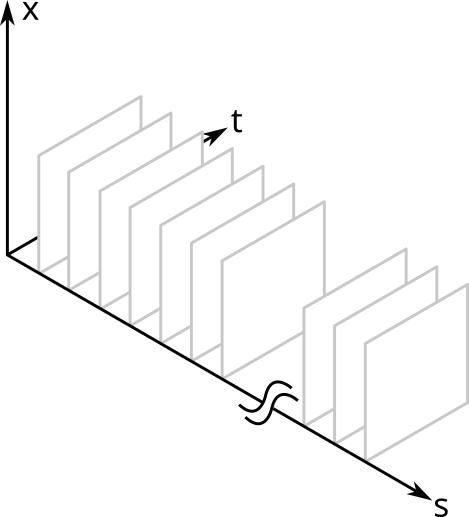
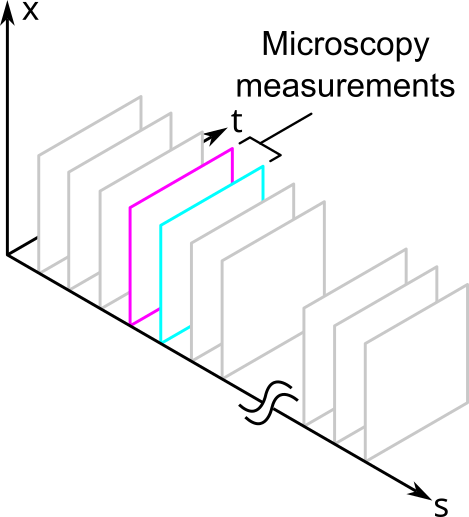
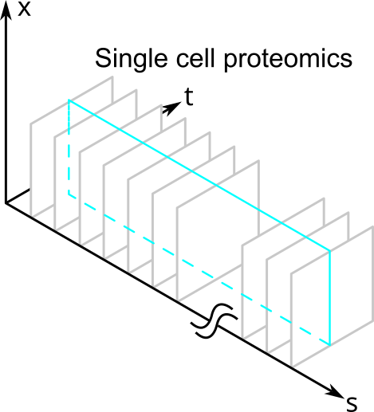
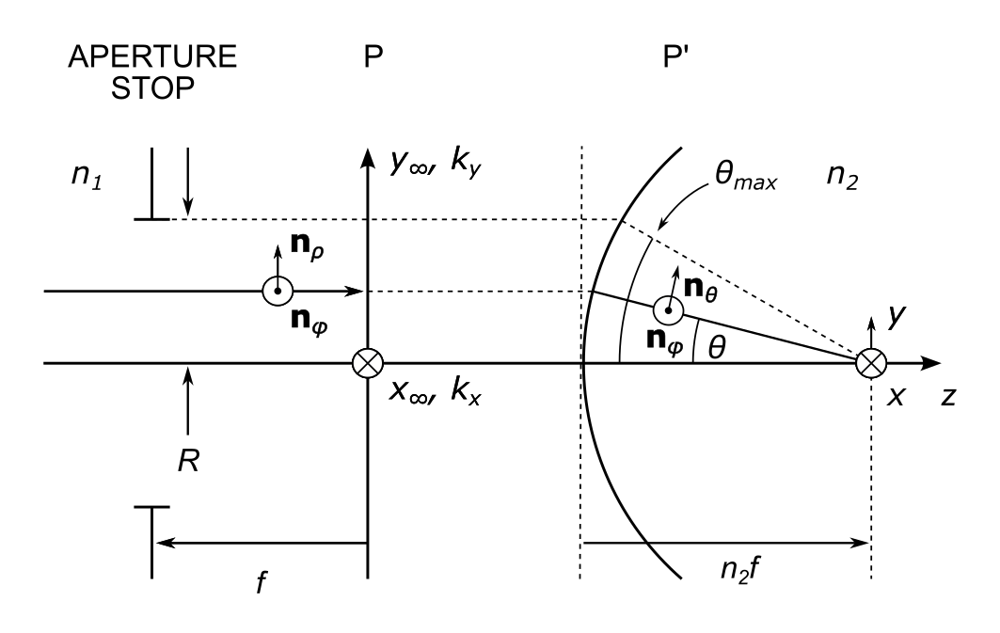
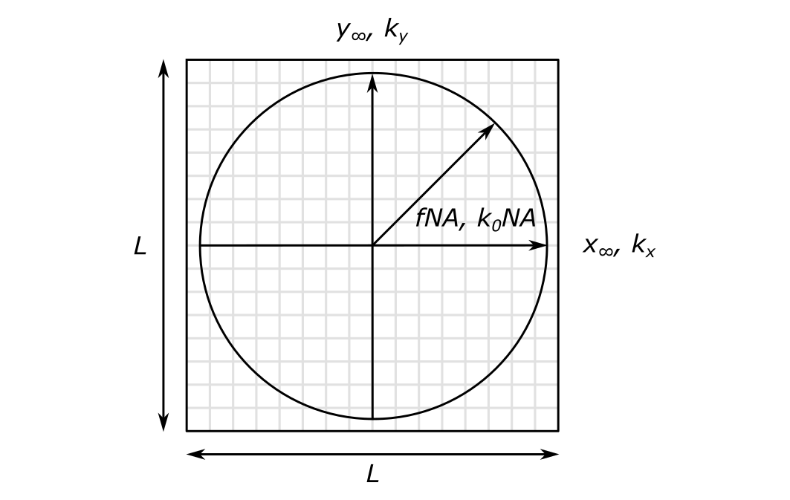

I recently needed to build a circuit to control the brightness of a 4 W LED with a knob. I know basic electronics, and I thought this would be easy. I spoke to a few people whom I know and are knowledgable in electronics. I also asked people on Reddit. A lot of people said it would be easy.
As it turns it, it wasn't easy.
The Requirements
My requirments are simple:
The brightness should be manually adjustable with a knob from OFF to nearly full ON.
The LED will serve as the light source of a microscope trans-illuminator. It should work across a large range of frame acquisition rates (1 Hz to 1 kHz, or exposure times of 1 ms to 1 s).
The range of brightnesses should be variable across the dynamic range of the camera, which in my case is 35,000:1, or about 90 dB.
I don't care about efficiency. I don't care about whether I can use a Raspberry Pi to control it. I don't care whether it can be turned on or off with different logic levels. I just want a knob that I can turn to make the LED brighter or dimmer.
In spite of the insistence of several people that I communicated with on the internet, I decided that the second requirement would preclude using pulse width modulation (PWM) to dim the LED. Even when I could convince others that PWM almost always causes aliasing at high frame rates, they tried to find obscure work arounds so I could still use PWM. I really do appreciate all the feedback I got. But I also learned that PWM is the hammer of the electronics world that makes everything look like a nail1.
The Circuit
I reached out to a friend of mine who's a wizard at analog electronics2. He suggested to use a MOSFET and to vary the gate-source voltage to control the current through the LED.
The LED is an Osram Oslon star LED (LST1-01F05-4070-01) with a maximum current of 1.3 A and a maximum forward voltage of 3.2 V. The MOSFET is an IRF510, whose gate-source threshold voltage is about 3 V.
Here's a brief explanation of what each component does:
Voltage source : This is just a 12 V wall wart.
200 nF capacitor : This smooths out any fluctuations from the wall wart.
50 kOhm potentiometer : The "knob." Turning it will vary the gate-source voltage of the MOSFET, which controls how much current flows through the LED.
50 kOhm resistor : This along with the potentiometer forms a voltage divider to keep the minimum voltage at the MOSFET gate close to where the LED turns on. Without it, you need to rotate the potentiometer almost half of its full range for the LED to turn on.
300 nF capacitor : A debounce capacitor that smooths out the mechanical irregularities of the pot when it turns.
IRF510 MOSFET : Basically a valve that I can vary continuously to control the LED current by setting the voltage at the gate.
LED : So pretty.
10 Ohm resistor : This limits the current through the resistor. I calculated its value by dividing the maximum supply voltage minus the maximum forward voltage drop across the LED by the maximum current, then rounded up for safety.
$$ R = \frac{V}{I} = \frac{\left( 12 \, V - 3.2 \, V \right) }{1.3 \, A} = 6.8 \Omega $$
The resistor also has to handle a large power dissipation at the maximum current:
$$ P = I^2 R = \left(1.3 \, A \right)^2 \left( 10 \Omega \right) = 16.9 W $$
I decided instead to keep the current to less than 1 Amp so that I could use a 10 Watt resistor that I had.
Power dissipation is also why we don't just use a potentiometer to control the LED current: my pots were only rated up to about 50 mW, whereas I expected that the MOSFET would have handle loads on the order of Watts due to the high current.
What I Learned
I really need to study MOSFETS
I still don't really know how to solve circuits with MOSFETs. I arrived at the above circuit largely by trial-and-error on a prototype and by performing naive calculations on the voltage divider that turned out to not be entirely correct. I also expected that the LED would turn on once I passed the MOSFET's gate-source voltage threshold, but this turned out to be off by about 2 or 3 V.
MOSFETs suffer from second order effects
There is currently a hysteresis in the gate-ground voltage at when the LED turns on and when it turns off by about half a Volt. According to a helpful person on Reddit, this is likely due to a change in both the LEDs forward voltage and the MOSFET's threshold voltage with temperature once the current starts flowing. A possible fix is to swap the order of the LED and the MOSFET so that only the MOSFET will contribute to the hysteresis.
You can always complicate things to make them better
The same person on Reddit above also suggested making the circuit robust to temperature variations by adding an opamp to control the MOSFET gate voltage. It would compensate for temperature changes by comparing the potentiometer value to the 10 Ohm resistor in a closed feedback loop.
Electronics is an art
Yes, electronics is a science, but I would argue that having to mentally juggle second order effects and the fact that experts seem to make an initial design "by feel" are signatures of an art.
It also struck me how nearly every step of the process forced me to take a detour to address something I hadn't at first considered, such as current limits in the wires and large variations in the MOSFET specs.
The next time I need to do something like this, I will expect the problem to take longer to solve than I first anticipate.
To my non-native English speaking readers: I mean that people try to use PWM to solve problems where it's not appropriate. ↩
I work in a biophysics lab applying microscopy techniques to study cell biology. I am not a biologist, and I was not trained as one. I therefore have had to develop heuristics to help me understand what cell biologists do and to communicate with them effectively.
In this post, I present these heuristics as a sort of model for how I think that cell biologists think. I collectively call them "Meta-Biophysics of the Cell" because:
they model the models of cell biologists, hence they are a meta-model,
they are inspired by physics and quantitative modeling, and
I limit myself to cellular processes and not, for example, in vitro or organismal studies.
Furthermore, they are heavily biased by my work in microscopy.
These heuristics may very well be wrong. I do not pretend to understand biology nearly as well as a biologist. If you think I am wrong, please do not hesitate to leave a comment and explain why.
They also are certainly not complete. I present here only what I think the most important heuristics are.
Biologists want to know distributions of proteins across space and time
Cell biology is concerned with understanding the structure and behavior of cells as complex phenomena that emerge from the interactions of molecules. The types of these molecules may be proteins, nucleic acids, lipids, or some other type. I will use the term "protein" generally because
it's easier than always listing all the types of molecules,
it's more precise than just saying "molecule"
there are at least 10,000 different types of proteins in the human cell, making proteins a core building block of the cell, and
these heuristics do not change if you substitute another type of molecule for the word "protein."
Within a single cell, we can model the number of proteins at a point in space and a point in time with a function \( N \left( \mathbf{r}, t \right) \). This is a spatiotemporal distribution for protein number density. Its dimensions are in numbers of proteins per unit of volume.
A single protein can be represented as a point in space and time, such as a delta function:
$$ N \left( \mathbf{r}, t \right) = \delta \left( \mathbf{r}, t \right) $$
Of course a real protein occupies some volume and is not a point, but at the level of a cell I think that this is an adequate model for what cell biologists want to know about protein distributions.
But wait. There are more than ten thousand types of proteins within the cell. Some proteins are of high abundance, and some are very rare. So it is not sufficient merely to count proteins in space and time: we also need to identify their types. For this, I assign a unique ID to each type that I call \( s \) for "species". Our model now becomes a function of another variable, one that is categorical rather than continuous:
$$ N \left( \mathbf{r}, t ; s\right) $$
Below I show a simplified schematic of the volume that this model occupies. It is simplified because I show only one spatial dimension (otherwise it would be a five dimensional hypervolume). I saw a figure like this once in a paper about a decade ago, but sadly I cannot find it to credit it. (Update 2025-01-30: The paper referred to is Megason and Fraser, "Imaging in Systems Biology," Cell 130(5), 784-795 (2007))

A cell can be represented as a "volume" of spatiotemporal distributions where one spatiotemporal slice belongs to each protein species.
The \( x \) and \( t \) dimensions are continuous; the \( s \) dimension is a discrete, categorical variable. Each \( s \) slice is the spatiotemporal distribution of that protein within a single cell. Each point in the volume is the protein density for that point in space and time and for that species of protein.
Individual proteins might also vary amongst themselves as in, for example, post translation modifications. This is not really a problem for the above model because we can use a different value for the \( s \) of each variant.
Creation and degradation of a protein
The appearance and disappearance of a protein is modeled as a non-zero value over a time range from \( t_0 \) to \( t_1 \). For example, a single protein existing over a finite time interval may be expressed as
$$\begin{eqnarray}
&&\delta \left( \mathbf{r}, t \right), \, t_0 < t < t_1 \\
&&0, \, \text{otherwise}
\end{eqnarray}$$
Biologists can only measure slices of protein distributions
Look again at the figure above. Remember that there are in fact five dimensions. Can any one experimental technique measure the whole hypevolume?
No. Instead, biologists can measure slices from the volume and try to piece together a complete picture of \( N \) from individual measurements.
For example, fluorescence microscopy can measure proteins in space and time. Sometimes it can measure in 3 spatial dimensions, but it is easier to measure in 2. Unfortunately, it can only measure a small of number of protein species relative to all the proteins that are in the cell. These would correspond to the different fluorescence channels of the measurement. Thus, fluorescence microscopy provides a slice of the volume that looks like the following:

Fluorescence microscopy measures a small slice of the spatiotemporal protein distribution that represents a cell.
Other types of measurements, such as those in single cell proteomics, might measure a large number of proteins but cannot resolve them in space and time. They would slice the volume like this:

So after their measurements, biologists are always going to be left with less than the total amount of information contained within a single cell because they can only measure slices of \( N \).
Organelles are mutually exclusive slices of protein distributions in space
Consider a mitochondrion. It is a membrane-bound organelle. Everything inside the mitochondrion is considered part of the organelle, and everything outside it is not. An organelle is therefore a mutually-exclusive slice through the volume dimensions of \( N \).
The slices are mutually-exclusive because two mitochondria cannot occupy the same volume at the same time and have a distinct identity.
For non-membrane bound organelles, keep reading.
Organelles contain many types proteins
If we use the definition of an organelle as a mutually-exclusive slice through the volume dimensions of \( N \), then we can look sideways along the \( s \) dimension to find all the proteins that belong to the organelle. If the distribution for protein \( s_i \) is non-zero inside an organelle's volume at a given time, then it belongs to the organelle. The set of all proteins within the volume slice at a given time constitute the organelle.
Knowing \( N \) doesn't by itself tell us what is and is not an organelle
Membrane-bound organelles are easy to identify because of their structure. Other sets of proteins within a given volume may or may not form an organelle. In these situations, we might look at their function instead to decide whether the volume is or is not occupied by an organelle.
For example, organelles like the centrosome have a diffuse, pericentriolar material that surround them. In this case, the border defining what is and isn't inside the centrosome is likely to be somewhat arbitrary.
Cause and Effect is the probability of one protein distribution given another
At this time, I am much less certain about how function and causal relationships fit within this model. It is nevertheless important because biologists are deeply interested in the function of proteins and other complexes. To a rough approximation, I would say that cause and effect describes how the spatiotemporal distributions of a subset of protein species can serve as a predictor of another distribution at a later time. In other words, we can assign a probability to a certain distribution given another one.
I would guess that not every possible set proteins is linked by causal relationships. This would mean that the limitations that come from being able to sample slices of the protein distribution hypervolume are not so significant. You would then want choose your measurements so that you slice the volume to include only the species that are causally linked for the phenomenon that you are studying.
As a consequence of this, the causal links between distributions are likely more important than knowing \( N \). I doubt that we can have a satisfactory understanding of the cell if we could exhaustively measure \( N \) for even a single cell.
Interactions between proteins require spatial colocalization
Protein-protein interactions occur on length-scales on the order of the size of individual proteins. For two different proteins to "interact" we require that they be colocated less than this distance. Colcalization means that two proteins are located less than the distance required for an interaction to occur.
Furthermore, colocalization is necessary but not sufficient for an interaction. A real interaction involves the chemistry between the two different species.
Summary
In summary, my main three heuristics for meta-biophysics of the cell are:
Biologists want to know distributions of proteins across space and time
Organelles are mutually exclusive slices of protein distributions in space
Cause and Effect is the probability of one or more protein distributions given another
I find that nearly all the problems that the cell biologists that I work with can be reformulated into this language. I emphasize again that the "real" science is being done by the biologists, and I in no way mean to diminish the complexity of their work. These heuristics are merely a tool that I use to understand what they are doing when I myself am unfamiliar with their jargon and mental models.
A common model for infinity corrected microscope objectives is that of an aplanatic and telecentric optical system. In many developments of this model, emphasis is placed upon the calculation of the electric field near the focus. However, this has the effect that the definition of the coordinate systems and geometry are conflated with the determination of the fields. In addition, making the model amenable to computation often occurs as an afterthought.
In this post I will explore the geometry of an aplanatic system for modeling high NA objectives with an emphasis on computational implementations. My approach follows Novotny and Hecht1 and Herrera and Quinto-Su2.
The Model Components
The model system is illustrated below:

A high NA, infinity corrected microscope objective as an aplanatic and telecentric optical system.
In this model, we abstract over the details of the objective by representing it as four surfaces:
A back focal plane containing an aperture stop
A back principal plane, \( P \)
A front principal surface, \( P' \)
A front focal plane
The space to the left of the back principal plane is called the infinity space. The space to the right of the front principal surface is called the sample space.
We let the infinity space refractive index \( n_1 = 1 \) because it is in air. The refractive index \( n_2 \) is the refractive index of the immersion medium.
The unit vectors \( \mathbf{n} \) are not used in this discussion; they are relevant for computing the fields.
Assumptions
We make one assumption: the system obeys the sine condition. The meaning of this will be explained later.
An aplanatic system is one that obeys the sine condition.
We will not assume the intensity law to conserve energy because it is only necessary when computing the electric field near the focus.
The Aperture Stop and Back Focal Plane
The aperture stop (AS) of an optical system is the element that limits the angle of the marginal ray.
The system is telecentric because the aperture stop is located in the back focal plane (BFP). We can shape the focal field by spatially modulating any of the amplitude, phase, or polarization of the incident light in a plane conjugate to the BFP.
The Back Principal Plane
This is the plane in infinity space at which rays appear to refract. It is a plane because rays coming from a point in the front focal plane all emerge into the infinity space in the same direction.
Strictly speaking, focus field calculations require us to propagate the field from the AS to the back principal plane before computing the Debye diffraction integral, but this step is often omitted3. The assumptions of paraxial optics should hold here.
The Front Principal Surface
The front principal surface is the surface at which rays appear to refract in the sample space. It is a surface because
this is a non-paraxial system, and
we assumed the sine condition.
The sine condition states that refraction of a ray coming from an on-axis point in the front focal plane occurs on a spherical cap centered upon the focal point. The distance from the optical axis of the point of intersection of the ray with the surface is proportional to the sine of the angle that the ray makes with the axis.
The principal surface is in the far field of the electric field coming from the focal region. For this reason, we can represent a point on this surface as representing a single ray or a plane wave1.
The Front Focal Plane
This plane is located a distance \( n_2 f \) from the principal surface4. It is not at a distance \( f \) from this surface. This is a result of imaging in an immersion medium.
Geometry and Coordinate Systems
The Aperture Stop Radius
The aperture stop radius \( R \) corresponds to the distance from the axis to the point where the marginal ray intersects the front prinicpal surface. In the sample space, the marginal ray travels at an angle \( \theta_{max} \) with respect to the axis.
Under the sine condition, this height is
$$ R = n_2 f \sin{ \theta_{max} } = f \, \text{NA} $$
The right-most expression uses the definition of the numerical aperture \( \text{NA} \equiv n \sin{ \theta_{max} } \).
Compare this result to the oft-cited expression for the entrance pupil diameter of an objective lens: \( D = 2 f \, \text{NA} \). They are the same. This makes sense because an entrance pupil is either
an image of an aperture stop, or
a physical stop.
The Back Principal Plane
There are two independent coordinate systems in the back principal plane:
the spatial coordinate system defining the far field positions \( \left( x_{\infty} , y_{\infty} \right) \), and
the coordinate system of the angular spectrum of plane waves \( \left( k_x, k_y \right) \).
The Far Field Coordinate System
The far field coordinate system may be written in Cartesian form as \( \left( x_{\infty} , y_{\infty} \right) \). It also has a cylindrical representation as
The cylindrical representation appears to be preferred in textbook developments of the model. The Cartesian representation is likely preferred for computational models because it works naturally with two-dimensional arrays of numbers, and because beam shaping elements such as spatial light modulators are rectangular arrays of pixels2.
The Angular Spectrum Coordinate System
Each point in the angular spectrum coordinate system represents a plane wave in the sample space that is traveling at an angle \( \theta \) to the axis according to:
$$\begin{eqnarray}
k_x &=& k \sin \theta \cos \phi \\
k_y &=& k \sin \theta \sin \phi \\
k_z &=& k \cos \theta
\end{eqnarray}$$
where \( k = 2 \pi n_2 / \lambda = n_2 k_0 \).
Along the y-axis ( \( x_{\infty} = 0 \) ), the maximum value of \( k_y \) is \(n_2 k_0 \sin \theta_{max} = k_0 \, \text{NA} \).
Substitute in the expression \( \text{NA} = R / f \) and we get \(k_{y, max} = k_0 R / f\). But \( R = y_{\infty, max} \). This (and similar reasoning for the x-axis) implies that:
$$\begin{eqnarray}
k_x &=& k_0 x_{\infty} / f \\
k_y &=& k_0 y_{\infty} / f
\end{eqnarray}$$
The above equations link the angular spectrum coordinate system to the far field coordinate system. They are no longer independent once \( f \) and \( \lambda \) are specified.
Numerical Meshes
There are four free parameters for defining the coordinate systems of the numerical meshes:
The numerical aperture, \( \text{NA} \)
The wavelength, \( \lambda \)
The focal length, \( f \)
The linear mesh size, \( L \)
Below is a figure that illustrates the construction of the meshes. Both the far field and angular spectrum coordinate systems are represented by a \( L \times L \) array. \( L = 16 \) in the figure below. In general the value of \( L \) should be a power of 2 to help ensure the efficiency of the Fast Fourier Transform (FFT). By considering only powers of 2, we need only consider arrays of even size as well.

A numeric mesh representing the far field and angular spectrum coordinate systems of a microscope objective. Fields are sampled at the center of each mesh pixel.
The fields are defined on a region of circular support that is centered on this array. The radius of the domain of the far field coordinate system is \( f \text{NA} \); the radius of the domain of the angular spectrum coordinate system is \( k_0 \text{NA} \).
The boxes that are bound by the gray lines indicate the location of each field sample. The \( \left( x_{\infty} , y_{\infty} \right) \) and the \( \left( k_x, k_y \right) \) coordinate systems are sampled at the center of each gray box. The origin is therefore not sampled, which will help avoid division by zero errors when the fields are eventually computed.
The figure suggests that we could create only one mesh and scale it by either \( f \text{NA} \) or \( k_0 \text{NA} \) depending on which coordinate system we are working with. The normalized coordinates become \( \left( x_{\infty} / \left( f \text{NA} \right), y_{\infty} / \left( f \text{NA} \right) \right) \) and \( \left( k_x / \left( k_0 \text{NA} \right), k_y / \left( k_0 \text{NA} \right) \right) \).
1D Mesh Example
As an example, let \( L = 16 \). To four decimal places, the normalized coordinates are \( -1.0000, -0.8667, \ldots, -0.0667, 0.0667, \ldots, 0.8667, 1.0000 \).
The spacing between array elements is \( 2 / \left( L - 1 \right) = 0.1333 \). Note that 0 is not included in the 1D mesh as it goes from -0.0667 to 0.0667.
A 2D mesh is easily constructed from the 1D mesh using tools such as NumPy's meshgrid.
Back Principal Plane Mesh Spacings
In the x-direction, the mesh spacing of the far field coordinate system is
$$ \Delta x_{\infty} = 2 R / \left( L - 1 \right) = 2 f \text{NA} / \left( L - 1 \right) $$
In the \( k_x \)-direction, the mesh spacing of the angular spectrum coordinate system is
Note the symmetry between these two expressions. One scales with \( f \text{NA} \) and the other \( k_0 \text{NA} \). Recall that these are free parameters of the model.
Sample Space Mesh Spacing
It is interesting to compute the spacing between mesh elements \( \Delta x \) in the sample space when the fields are eventually computed.
The sampling angular frequency in the sample space is \( k_S = 2 \pi / \Delta x \).
The Nyquist-Shannon sampling theory states that the maximum informative angular frequency is \( k_{max} = k_S / 2 \).
From the previous section, we know that \( k_{max} = \left(L - 1 \right) \Delta k_x / 2 \), and that \( \Delta k_x = 2 k_0 \text{NA} / \left( L - 1 \right) \).
Combining all the previous expressions and simplifying, we get:
Solving the above expression for \( \Delta x \), we arrive at
$$ \Delta x = \frac{\lambda}{2 \text{NA}} $$
which is of course the Abbe diffraction limit.
Effect of not Sampling the Origin
Herrera and Quinto-Su2 point out that an error will be introduced if we naively apply the FFT to compute the field components in the \( \left( k_x, k_y \right) \) coordinate system because the origin is not sampled, whereas the FFT assumes that we sample the zero frequency component. The effect is that the result of the FFT has a constant phase error that accounts for a half-pixel shift in each direction of the mesh.
Consider again the 1D mesh example with \(L = 16 \): \( -1.0000, -0.8667, \ldots, -0.0667, 0.0667, \ldots, 0.8667, 1.0000 \)
In Python and other languages that index arrays starting at 0, the origin is located at \(L / 2 - 0.5 \), i.e. halfway between the samples at index 7 and 8. A lateral shift in Fourier space is equivalent to a phase shift in real space:
$$ \phi_{shift} \left(X, Y \right) = -j 2 \pi \frac{0.5}{L} X - j 2 \pi \frac{0.5}{L} Y $$
where \( X \) and \( Y \) are normalized coordinates.
At this point, I am uncertain whether the phasor with the above argument needs to be multiplied or divided with the result of the FFT because 1. there are a few typos in the signs for the coordinate system bounds in the manuscript of Herrera and Quinto-Su, and 2. the correction was developed for use in MATLAB, which indexes arrays starting at 1. Once the fields are computed, it would be easy to verify the correct sign of the phase terms following the procedure outlined in Figure 3 of Herrera and Quinto-Su's manuscript.
Structure of the Algorithm
The algorithm to compute the focus fields will proceed as follows:
(optional) Propgate the inputs fields from the AS to the back principal plane using paraxial wave propagation
Input the sampled fields in the back principal plane in the \( \left( x_{\infty}, y_{\infty} \right) \) coordinate system
Transform the fields to the \( \left( k_x, k_y \right) \) coordinate system
Compute the fields in the \( \left(x, y, z \right) \) coordinate system using the FFT
Additional Remarks
Zero padding the mesh will increase the sample space resolution beyond the Abbe limit, but since the fields remain zero outside of the support, no new information is added.
On the other hand, zero padding might be required when computing fields going from the sample space to the back principal plane to faithfully reproduce any evanescent components.
Separating the coordinate system and mesh construction from the calculation of the fields reveals that the two assumptions of the model belong separately to each part. The sine condition is used in the construction of the coordinate systems, whereas energy conservation is used when computing the fields.
This post did not explain how to compute the fields.
Herrera and Quinto-Su (and possibly also Novotny and Hecht) appear to use an "effective" focal length which can be obtained by multiplying the one that I use by the sample space refractive index. I prefer my formulation because it is consistent with geometric optics and the well-known expression for the diameter of an objective's entrance pupil. When the fields are calculated, however, I do not yet know whether the arguments of the phasors of the Debye integral will require modification.
Isael Herrera and Pedro A. Quinto-Su, "Simple computer program to calculate arbitrary tightly focused (propagating and evanescent) vector light fields," arXiv:2211.06725 (2022). https://doi.org/10.48550/arXiv.2211.06725↩↩↩
Marcel Leutenegger, Ramachandra Rao, Rainer A. Leitgeb, and Theo Lasser, "Fast focus field calculations," Opt. Express 14, 11277-11291 (2006). https://doi.org/10.1364/OE.14.011277↩
Sun-Uk Hwang and Yong-Gu Lee, "Simulation of an oil immersion objective lens: A simplified ray-optics model considering Abbe’s sine condition," Opt. Express 16, 21170-21183 (2008). https://doi.org/10.1364/OE.16.021170↩
It is a good idea to use fine-grained access tokens for shared PCs in the lab that require access to private GitHub repos so that you can restrict the scope of their use to specific repositories and not use your own personal SSH keys on the shared machines. I am experimenting with the GitHub command line tool gh to authenticate with GitHub using fine-grained access tokens and make common remote operations on repos easier.
Today I encountered a subtle problem in the gh authentication process. If you set the protocol to ssh during login, then you will not have access to the repos that you granted permissions to in the fine-grained access token. This can lead to a lot of head scratching because it's not at all clear which permissions map to which git operations. In other words, what you think is a specific permissions error with the token is actually an authentication error.
To avoid the problem, be sure to specify https and not ssh as the protocol during authentication: